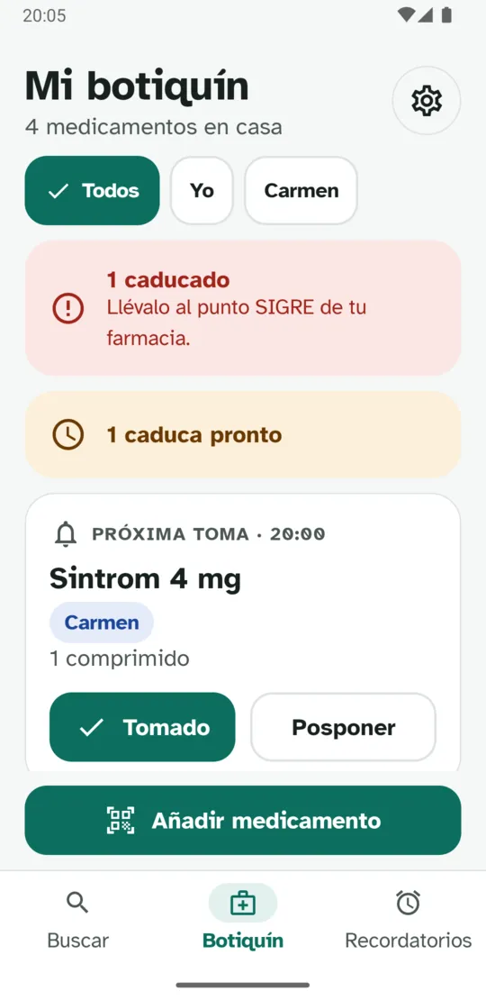
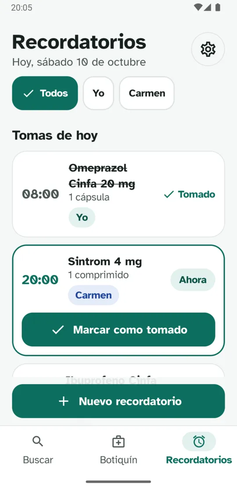
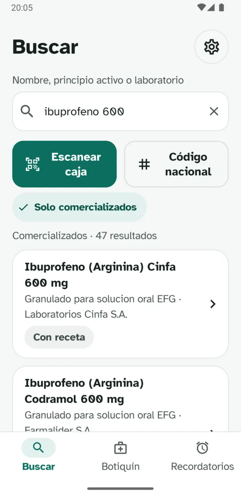
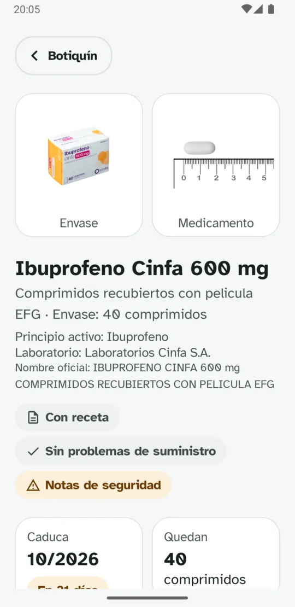
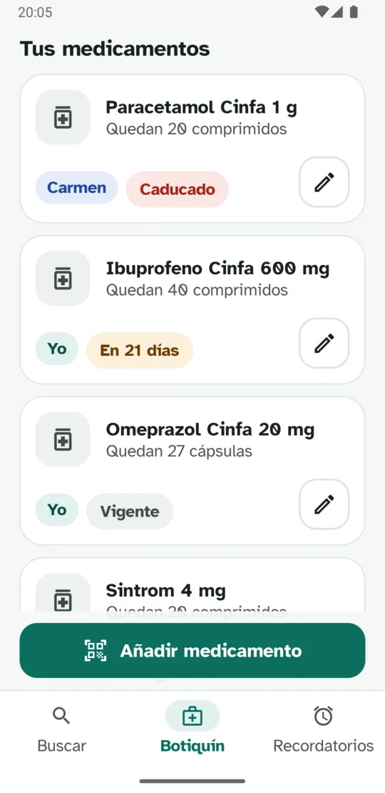
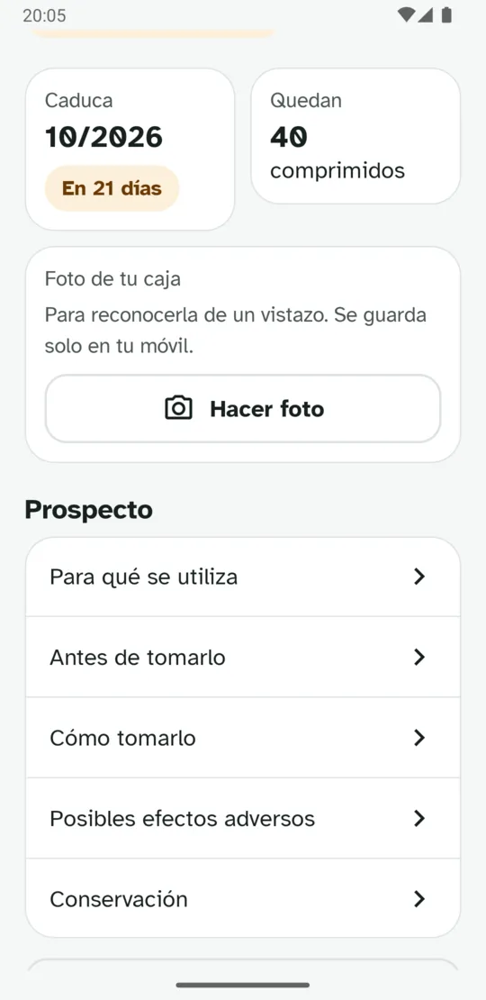
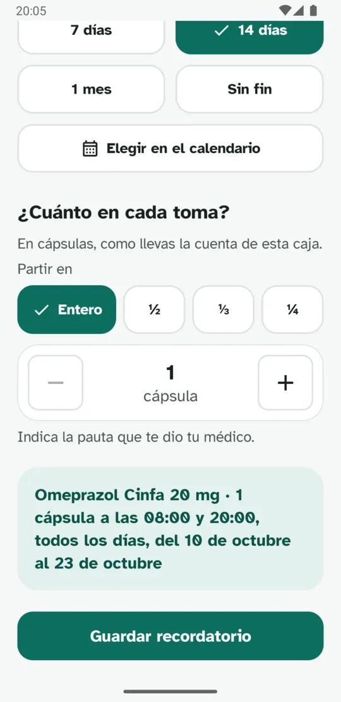
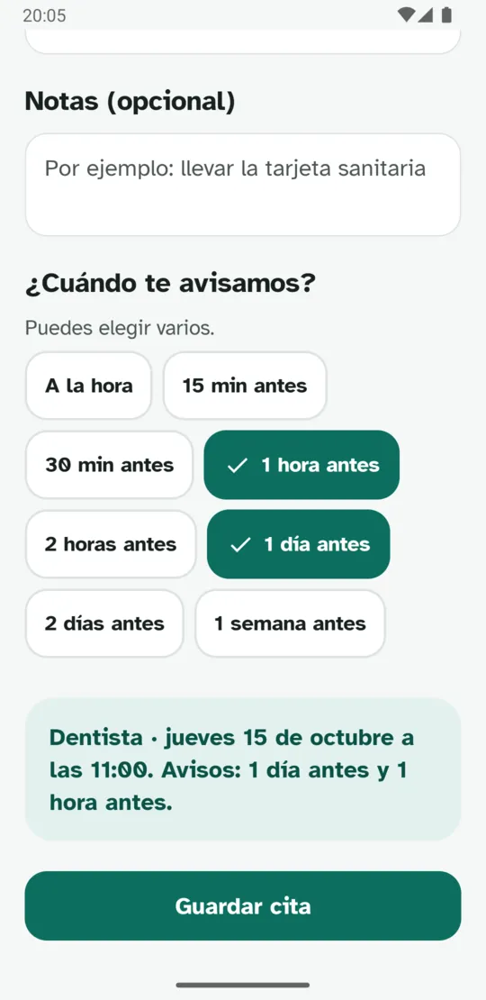

Busca con datos oficiales
Por nombre, principio activo o laboratorio, por el código nacional de la caja o escaneando su código. La información viene del CIMA de la AEMPS.
Busca cualquier medicamento con la información oficial de la AEMPS, guarda los que tienes en casa, controla las caducidades y crea recordatorios con la pauta que te dio tu médico.


Pensada para que cualquiera la entienda a la primera, también las personas mayores y quienes las cuidan.
Por nombre, principio activo o laboratorio, por el código nacional de la caja o escaneando su código. La información viene del CIMA de la AEMPS.
Para qué se utiliza, cómo tomarlo, efectos adversos o conservación, con botones grandes. Lo que guardas se puede consultar sin conexión.
Cada caja con su fecha: Caducado, Caduca pronto o Vigente, siempre con texto. Y te recuerda llevar lo caducado al punto SIGRE.
Si quieres, lleva la cuenta de cada caja: cada toma marcada descuenta. Puedes pedir un aviso cuando queden pocas.
Horas, días y duración en pocos pasos, con medias, tercios o cuartos. El aviso trae los botones Tomado, +10 min y Saltar.
Apunta tus citas con hora y lugar, y elige uno o varios avisos: el día antes, una hora antes…
Añade a las personas de casa. Cada medicamento, recordatorio y cita es de alguien, y puedes ver solo lo de cada uno.
Guarda tus datos en un archivo, donde tú elijas, y recupéralos al cambiar de móvil.
Letra Atkinson Hyperlegible, botones grandes, buen contraste y modo oscuro. Respeta el tamaño de letra de tu móvil.






Pulsa una captura para verla en grande.
No hay cuentas ni servidores: tus medicamentos, recordatorios, citas y fotos se guardan solo en tu móvil. Sin anuncios y sin analítica.
Para buscar, la app consulta directamente el CIMA de la AEMPS, sin enviar nada de tu botiquín.
Mi botiquín no recomienda, receta ni sugiere ningún medicamento, dosis ni tratamiento. No es un producto sanitario y no diagnostica, trata, cura ni previene ninguna enfermedad.
Ante cualquier duda, consulta siempre a tu médico o farmacéutico. El prospecto de tu medicamento y las indicaciones de tu médico prevalecen sobre lo que veas en la app.
Sí. Sin anuncios, sin suscripciones y sin funciones de pago.
No. La app no tiene cuentas ni registro: la abres y empiezas a usarla.
No, nunca. Solo muestra la información oficial de la AEMPS y lo que tú apuntas. Las pautas de los recordatorios las introduces tú, según lo que te haya indicado tu médico.
Del Centro de Información de Medicamentos (CIMA) de la Agencia Española de Medicamentos y Productos Sanitarios (AEMPS). Mi botiquín no está vinculada ni respaldada por la AEMPS.
Para buscar medicamentos nuevos necesitas conexión. Lo que ya tienes guardado, incluido el prospecto, se puede consultar sin conexión, y los recordatorios funcionan igual.
El código de barras y el código Data Matrix de la caja. No identifica pastillas sueltas ni blísters, porque no sería fiable. Siempre te pide confirmar el medicamento antes de guardarlo.
Desde Ajustes puedes guardar una copia de seguridad en un archivo (por ejemplo, en tu Google Drive) y recuperarla en el móvil nuevo.
Usan las alarmas del propio móvil, pero dependen de la batería, del ahorro de energía y de los permisos. En Ajustes hay una opción para comprobar que los avisos funcionan. No deben ser tu única forma de recordar la medicación.
De momento solo para Android (8.0 o superior).